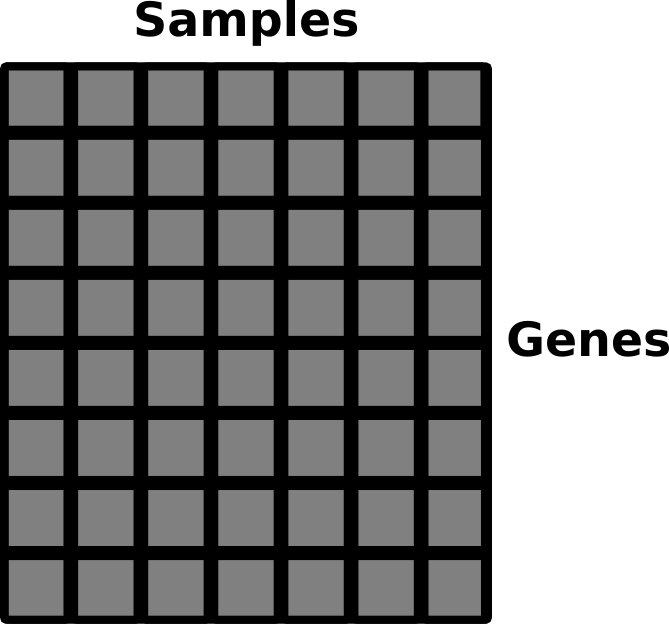
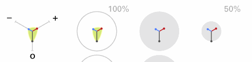
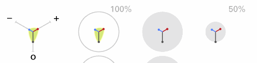
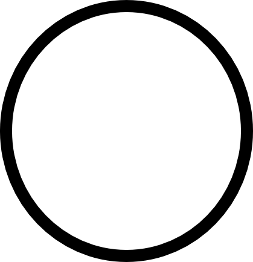
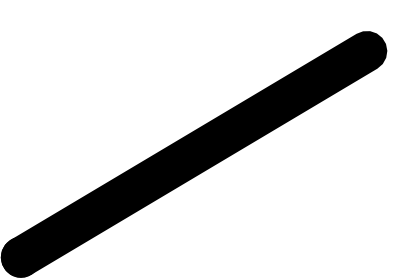
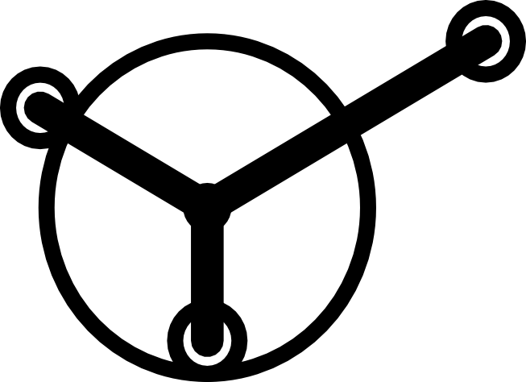

We're going to learn some Processing
follow these slides at http://www.broadinstitute.org/~cflynn/BroadEProcessing
Install Processing
What Problem are we trying to solve?
The CMap analytics rely on a modified KS statistics to score signatures as negatively connected (-1 to 0), null (0) or positively connected (0 – 1) to a reference.
It would be useful to know the total number of signatures displayed and the proportion of negative, null, and positive connections.
Vis Prototypes
 

Circle Primitives
line Primitives

Mash them up to build the plot
ellipse(50,50,50,50);
line(0,0,50,50);
size(x,y)
background(R,G,B);
fill(R,G,B);
stroke(R,G,B);
strokeWeight(Size);
noStroke();
About Me
Corey Flynn
Bioinformatics Scientist II
Connectivity Map
Golub Lab, Cancer Program